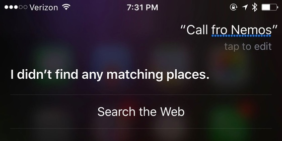
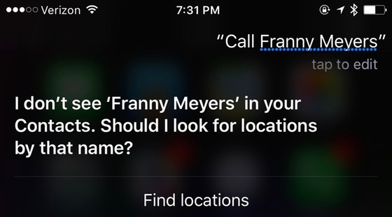
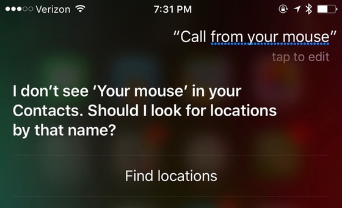
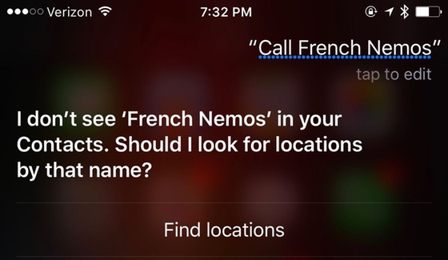
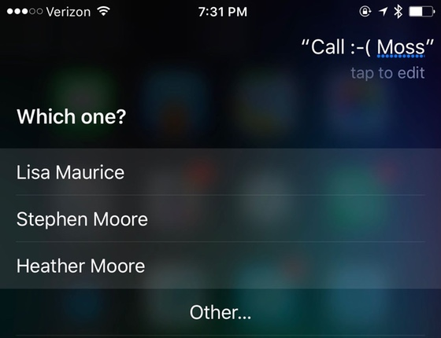
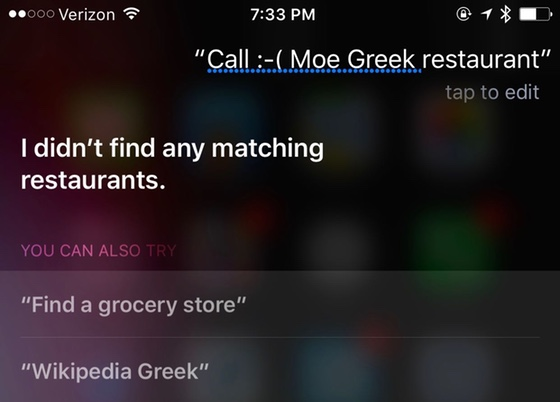
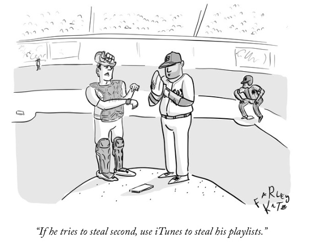

October 2017
iOS & Apple news
Apple released iPhone 8, 8 Plus, and Watch Series 3 (with and w/o LTE).
Apple now offers an additional option to purchase iPhones, reports Mashable. `Apple iPhone Payments' lets you break down the price over 24 equal payments. You do not need to buy through the carrier and sign up or extend a 2year contract. This option is separate from the `iPhone Upgrade Program' which includes Apple Care Plus and lets the user upgrade their iPhone every year.
A 12-year-old app developer was sent by Ellen degeneres to the Apple keynote event last month. Here he is behind the scenes:
I sent 12-year-old Alex Knoll to the Apple Keynote. Then @Tim_Cook surprised him. pic.twitter.com/QVp8hqq9cg
— Ellen DeGeneres (@TheEllenShow) September 19, 2017
The new iPhone 8 and 8 Plus are ridiculously fast, as show these benchmark scores. Impressive. In fact, compared to Android and Samsung Galaxy 8, iPhone 8 is about 2x faster.
The Face ID icon reminds us of something else:
Hello old friend @SusanKare pic.twitter.com/tpvbH1DyEJ
— Patrick Smith (@concreteniche) September 12, 2017
Apple released new folio cases for iPhone X.
iPhone 8 and X charge to 50% within only 30 minutes if you use a USB-C adapter, reports 9to5mac.
There are the devices that can upgrade to iOS 11.
Today, Apple released iOS 11.0.2 which fixes static noise during FaceTime and phone calls, reports Macworld.
For those considering the new iPhone X, remember that the best way to order one is to use the iOS Apple Store app, ensure you have a payment option all ready to go (Apple Pay is best but not required), save the model now as a favorite, and wait to order 1 second past midnight on Friday Oct 27 (that's really Thursday night Oct 26).
new iTunes
The new iTunes that was released a couple of days prior to iOS 11 took many by surprise: it eliminated the App store for iOS and the entire view of iPhone or iPad that syncs via iTunes.
Now, restoring apps happens via the online app store, directly from the iPhone or iPad, reports MacObserver.
Here is Apple's official list of changes in iTunes.
A good overview of how to adapt to the changes, by Macworld.
Finally, if you used iTunes to transfer files, now you can use AirDrop. Apple has always favored a wireless approach and has said `the future is wireless’.
iOS 11
Here is Apple’s summary of new features in iOS 11.
Here is a nice list of new features by category.
Lots of wonderful new features. Here are some you might have missed:
And here are 11 iOS 11 features you may have missed.
You can use Search iOS 11 to look up definitions and spell-check.
How to open 2 Safari windows in split view on the iPad.
Drag and Drop, multitasking, and Split View on iPad: a thorough overview by iMore.
Do you want a LONG and accurate deep dive into iOS 11 new features? Here it is, by ArsTechnica.
iLounge has written a very comprehensive overview of iOS 11 that is worth reading. However, they have strangely messed up the placement of screenshots; just read the article and follow along with your own iPhone or iPad to see the new features.
Apple has created a page on iOS 11 preview. Take a look at all their brief but educational videos. Here are some:
Apple has created a page on How to Do Even More with an iPad Pro and iOS 11.
iPhone 8 Plus and photography
An excellent comprehensive review of iPhone 8 and 8 Plus, by iMore.
Perhaps the most compelling reason to upgrade to an iPhone 8Plus (even for those who have the 7 Plus) is photography. The camera improvements are astounding. See iPhone 8 Plus camera review, by pro photographer Austin Mann.
The latest iPhone 8 Plus ad showcases photography and portrait mode:
The PGA TOUR hired professional photographer Brad Mangin to shoot the Presidents Cup with his new iPhone 8 Plus. Here are the results.
siri (not) calling Fronimos
Recently, Olga asked Siri to call Fronimo’s to confirm our iPUG reservations. She said `Siri, call Fronimos’. Hilarity ensued as Olga slowed down her speech pattern to help Siri understand which made matters worse.






watch
An overview of watchOS 4 by Apple.
What's new in watchOS4: a very nice summary by iMore.
WatchOS 4 review, by iMore. This is a very thorough review. Excellent overview of new features, concluding that they will delight users.
How to set up cellular and LTE on Apple Watch , by iMore. Bottom line: you need NOT set up cellular service at all. You can use the LTE watch just like any other Apple Watch model. The cellular option works with any of the US carriers.
How to turn your watch into a flashlight, reports iMore.
A nice overview of watchOS v4, from AppleInsider:
How to customize the new Siri watch face, so that it is best suited to your needs.
How to fix the `broken' stand reminders in watchOS 4.
15 Apple Watch games you should play, reports Macworld.
iMore lists watch bands similar to Hermes but for a lot lower prices.
Boston Red Sox found a new use for their Apple Watches: to `to illicitly steal hand signals from opponents’ catchers in games against the second-place Yankees and other teams, reports the NY Times. Here are steps sketched out on how they did it.
The New Yorker cartoon on the topic:

There was a bug that some reviewers of the new watch found soon after its release. It is actually an older WiFi bug, when the watch connects to WiFi networks that are public and have an interstitial captive. In that case, the watch will not switch to LTE mode. Apple will release a fix soon.
Apple has released watchOS 4.1 beta to developers, and here is an overview, by 9to5Mac.
options for older devices
If you don't want to sell your older iOS devices, but you are planning to upgrade to a new iPhone or iPad, here are some ideas about what to do with your old iPhones and iPads, the WSJ.
Of course you can also give them as gifts to family.
No matter what you decide to do, What to do before you sell or give away your iPhone or iPad, by Apple.
If you want to sell or buy iPhones, iPads, Apple Watches, consider using Swappa. It's a marketplace designed for this purpose, sales are fast and secure. Olga recently used it to buy 2 used iPhone 6 (for gifts), and to sell 4 old iPads, and 2 Apple Watches. All were very good experiences and the sales give nearly 2x what Gazelle offers.
Another option is Apple. They take your old devices and give you instant credit.
Here is a checklist of what to do to prepare your iOS device for sale, provided by Swappa.
Are you buying a new iPad soon? How to take your data plan to a new iPad, reports the NY Times.